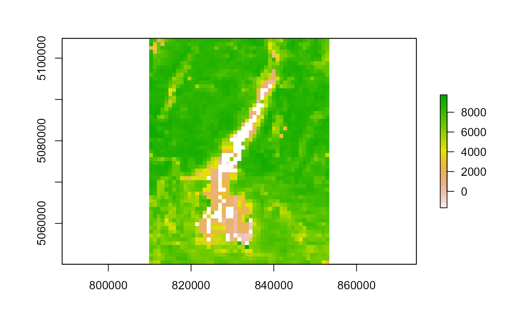
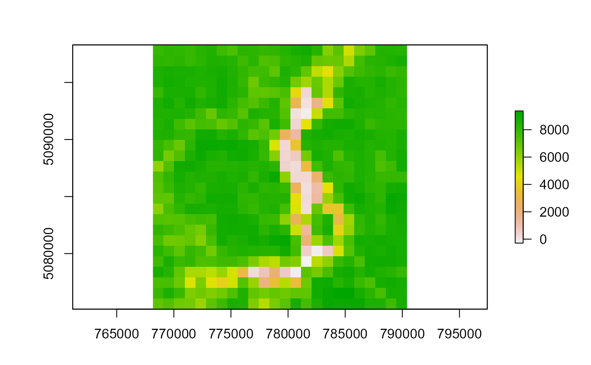

Main function for the MODIS Time Series Processing Tool (MODIStsp)
MODIStsp(
...,
gui = TRUE,
out_folder = NULL,
out_folder_mod = NULL,
opts_file = NULL,
selprod = NULL,
prod_version = NULL,
bandsel = NULL,
quality_bandsel = NULL,
indexes_bandsel = NULL,
sensor = NULL,
download_server = NULL,
downloader = NULL,
user = NULL,
password = NULL,
download_range = NULL,
start_date = NULL,
end_date = NULL,
spatmeth = NULL,
start_x = NULL,
end_x = NULL,
start_y = NULL,
end_y = NULL,
bbox = NULL,
spafile = NULL,
out_projsel = NULL,
output_proj = NULL,
out_res_sel = NULL,
out_res = NULL,
resampling = NULL,
reprocess = NULL,
delete_hdf = NULL,
nodata_change = NULL,
scale_val = NULL,
ts_format = NULL,
out_format = NULL,
compress = NULL,
test = NULL,
n_retries = 5,
verbose = TRUE,
parallel = TRUE
)not used for values, forces later arguments to bind by name
logical if TRUE: the GUI is opened before processing. If FALSE:
processing parameters are retrieved from the provided opts_file
argument), Default: TRUE
character Main output folder, default: NULL.
character Output folder for original HDF storage.
If "$tempdir" (default), a temporary directory is used.
character full path to a JSON file
containing MODIStsp processing options saved from the GUI, Default: NULL
character Name of selected MODIS product (e.g.,
Vegetation Indexes_16Days_250m (M*D13Q1)). You can get
a list of available product names using function MODIStsp_get_prodnames,
Default: NULL
Version of the selected MODIS product.
Currently versions "006" and/or "061" can be chosen.
Default value is "006" until decommission of this version will be
announced by USGS.
Products with version "061 are experimental: in case users would encounter
an error in the encoding of bands or quality flags they are encouraged
to report it by opening a new issue on GitHub at
https://github.com/ropensci/MODIStsp/issues.
character array Original MODIS layers to be processed.
You can get a list of available layers for a given product
using function MODIStsp_get_prodlayers (e.g., MODIStsp_get_prodlayers("M*D13Q1")$bandnames),
Default: NULL
character array Quality Indicators to be computed starting from
bit fields of original MODIS layers. You can get a list of available quality layers for a given product
using function MODIStsp_get_prodlayers (e.g., MODIStsp_get_prodlayers("M*D13Q1")$quality_bandnames),
Default: NULL
character arraySpectral Indexes to be computed starting from reflectance bands.
You can get a list of available quality layers for a given product
using function MODIStsp_get_prodlayers (e.g., MODIStsp_get_prodlayers("M*D13Q1")$indexes_bandnames),
Default: NULL
character ["Terra"| "Aqua" | "Both"] MODIS platform to be considered.
(Ignored for MCD* products). Default: "Both"
character ["http" | "offline"] service to be used for
download. Default: "http"
download_server character ["http" | "aria2"] downloader to be used,
Default: "http"
character Username for NASA http server.
(urs.earthdata.nasa.gov/home).
character Password for NASA http server
(urs.earthdata.nasa.gov/home).
character ["Full" | "Seasonal"] If "full", all the
available images between the starting and the ending dates are downloaded;
If "seasonal", only the images included in the season are downloaded
(e.g: if the starting date is 2005-12-01 and the ending is 2010-02-31, only
the images of December, January and February from 2005 to 2010 - excluding
2005-01, 2005-02 and 2010-12 - are downloaded), Default: Full
character Start date for images download and preprocessing
(yyyy.mm.dd), Default: NULL
character End date for images download and preprocessing
(yyyy.mm.dd), Default: NULL
character ["tiles" | "bbox" | "file"], indicates how the processing
extent is retrieves. if "tiles", use the specified tiles (start_x....).
If "file", retrieve extent from spatial file specifies in spafile. If
"bbox", use the specified bounding box, Default: "tiles"
integer [0-35] Start MODIS horizontal tile defining spatial extent.
Ignored if spatmeth != "tiles", Default: 18
integer [0-35] End MODIS horizontal tile defining spatial extent.
Ignored if spatmeth != "tiles", Default: 18
integer [0-17] Start MODIS vertical tile defining spatial extent.
Ignored if spatmeth != "tiles", Default: 4
integer [0-17] End MODIS vertical tile defining spatial extent.
Ignored if spatmeth != "tiles", Default: 4
numeric(4) Output bounding box (xmin, ymin, xmax, ymax) in
out_proj coordinate system. Ignored if spatmeth == "tiles", Default: NULL
character (optional) full path of a spatial file
to use to derive the processing extent. If not NULL, the processing options
which define the extent, the selected tiles and the "Full Tile / Custom"
in the JSON options file are overwritten and new files are created on the
extent of the provided spatial file. Ignored if spatmeth != "file", Default: NULL
character ["Native", "User Defined] If "Native", the
outputs keep the original resolution of MODIS HDF images. Otherwise, the value
set in "out_res" is used, Default:Native
character either equal to "MODIS Sinusoidal",
or to the code of a valid EPSG or to a WKT projection string.
Ignored if outproj_sel == "Native", Default: NULL
character ["Native", "User Defined]. If "Native", the
outputs keep the original resolution of MODIS HDF images. Otherwise, the value
set in "out_res" is used.
float Output resolution (in output projection measurement
unit). Ignored if out_res_sel == "Native".
character ["near" | "bilinear" | "cubic" | "cubicspline", |lanczos"|, "average"|, "mode", |"max"|, |"min"|, |"q1"|, |"q3"|, |"sum"|]
Resampling method to be used by gdalwarp.
logical If TRUE, reprocess data for already existing dates.
logical If TRUE, delete downloaded HDF files after completion.
logical if TRUE, NoData values are set to the max value
of the datatype of the layer on the MODIStsp output rasters. NOTE: If multiple
nodata values are reported for a layer, all are reset to the new value.
logical If TRUE, scale and offset are applied to
original MODIS layers, and Spectral Indexes are saved as floating point. If
FALSE, no rescaling is done and Spectral Indexes are saved as integer, with a
10000 scaling factor.
character array including ["R RasterStack" | "ENVI Meta Files" | "GDAL VRT" | "ENVI and GDAL"] Selected virtual time series format.
character ["ENVI" | "GTiff"] Desired output format.
character ["None" | "PACKBITS" | "LZW" | "DEFLATE"]
Compression method for GTiff outputs (Ignored if out_format == ENVI)
integer | character (e.g., "01a") if set, MODIStsp is executed in
"test mode", using a preset Options File instead than opening the GUI or accepting the
opts_file parameter. This allows both to check correct installation on
user's machines, and to implement unit testing.
numeric maximum number of retries on download functions.
In case any download function fails more than n_retries times consecutively,
MODIStsp_process will abort, Default: 20
logical If FALSE, suppress processing messages,
Default: TRUE
logical If TRUE (default), the function is run using parallel
processing, to speed-up the computation for large rasters (with a maximum
of 8 cores).
The number of cores is automatically determined; specifying it is also
possible (e.g. parallel = 4). In this case, more than 8 cores can be
specified. If FALSE (default), single core processing is used.
The function is used to:
initialize the processing (folder names, packages, etc.);
launch the GUI (MODIStsp_GUI()) on interactive
execution, or load an options file to set processing arguments and/or
retrieve CLI inputs and run processing on non-interactive execution;
launch the routines for downloading and processing the requested datasets.
(MODIStsp_process())
launching the function with GUI = FALSE and without specifying a opts_file initializes arguments with default values. This allows making a test run.
License: GPL 3.0
# \donttest{
#' # - Running the tool using the GUI
# Running the tool without any option will start the GUI with the default or
# last used settings, in interactive mode (i.e., with gui = TRUE).
if (interactive()) {
MODIStsp()
}
#' # - Running the tool specifying processing arguments in the call
# **NOTE** Output files of examples are saved to file.path(tempdir(), "MODIStsp").
# Here we process layers __NDVI__ and __EVI__ and quality indicator __usefulness__
# of product __M*D13Q1__, considering both Terra and Aqua platforms, for dates
# comprised between 2020-06-01 and 2020-06-15 and saves output to R tempdir
# --> See name and available layers for product M*D13Q1.
# Note that this example (as well as the following ones) is run in single
# core to follow CRAN policies, by setting parallel = FALSE.
# Users can exploit multicore functionalities skipping to set this argument.
# The following check is performed in order not to provide errors
# running the examples if HDF4 is not supported.
is_hdf4_supported <- "HDF4" %in% sf::st_drivers("raster")$name
MODIStsp_get_prodlayers("M*D13A2")
#> $prodname
#> [1] "Vegetation_Indexes_16Days_1Km (M*D13A2)"
#>
#> $bandnames
#> [1] "NDVI" "EVI" "VI_QA" "b1_Red" "b2_NIR" "b3_Blue"
#> [7] "b7_SWIR" "View_Zen" "Sun_Zen" "Rel_Az" "DOY" "Rely"
#>
#> $bandfullnames
#> [1] "16 day NDVI average" "16 day EVI average"
#> [3] "VI quality indicators" "Surface Reflectance Band 1"
#> [5] "Surface Reflectance Band 2" "Surface Reflectance Band 3"
#> [7] "Surface Reflectance Band 7" "View zenith angle of VI pixel"
#> [9] "Sun zenith angle of VI pixel" "Relative azimuth angle of VI pixel"
#> [11] "Day of year of VI pixel" "Quality reliability of VI pixel"
#>
#> $quality_bandnames
#> [1] "QA_qual" "QA_usef" "QA_aer" "QA_adj_cld" "QA_BRDF"
#> [6] "QA_mix_cld" "QA_land_wat" "QA_snow_ice" "QA_shd"
#>
#> $quality_fullnames
#> [1] "VI Quality"
#> [2] "VI usefulness"
#> [3] "Aerosol quantity"
#> [4] "Adjacent cloud detected"
#> [5] "Atmosphere BRDF correction performed"
#> [6] "Mixed Clouds"
#> [7] "Land/Water Flag"
#> [8] "Possible snow/ice"
#> [9] "Possible shadow"
#>
#> $indexes_bandnames
#> [1] "SR" "NDFI" "NDII7" "SAVI"
#>
#> $indexes_fullnames
#> [1] "Simple Ratio (NIR/Red)"
#> [2] "Flood Index (Red-SWIR2)/(Red+SWIR2)"
#> [3] "NDII7 (NIR-SWIR2)/(NIR+SWIR2)"
#> [4] "SAVI (NIR-Red)/(NIR+Red+0.5)*(1+0.5)"
#>
if (is_hdf4_supported) {
MODIStsp(
gui = FALSE,
out_folder = "$tempdir",
selprod = "Vegetation_Indexes_16Days_1Km (M*D13A2)",
bandsel = c("EVI", "NDVI"),
quality_bandsel = "QA_usef",
indexes_bandsel = "SR",
user = "mstp_test" ,
password = "MSTP_test_01",
start_date = "2020.06.01",
end_date = "2020.06.15",
verbose = FALSE,
parallel = FALSE
)
}
#> Please note that rgdal will be retired during October 2023,
#> plan transition to sf/stars/terra functions using GDAL and PROJ
#> at your earliest convenience.
#> See https://r-spatial.org/r/2023/05/15/evolution4.html and https://github.com/r-spatial/evolution
#> rgdal: version: 1.6-7, (SVN revision 1203)
#> Geospatial Data Abstraction Library extensions to R successfully loaded
#> Loaded GDAL runtime: GDAL 3.6.2, released 2023/01/02
#> Path to GDAL shared files: C:/Users/luigi.ranghetti/AppData/Local/Programs/R/R-4.3.0/library/rgdal/gdal
#> GDAL does not use iconv for recoding strings.
#> GDAL binary built with GEOS: TRUE
#> Loaded PROJ runtime: Rel. 9.2.0, March 1st, 2023, [PJ_VERSION: 920]
#> Path to PROJ shared files: C:/Users/luigi.ranghetti/AppData/Local/Programs/R/R-4.3.0/library/rgdal/proj
#> PROJ CDN enabled: FALSE
#> Linking to sp version:1.6-1
#> To mute warnings of possible GDAL/OSR exportToProj4() degradation,
#> use options("rgdal_show_exportToProj4_warnings"="none") before loading sp or rgdal.
#' # - Running the tool using the settings previously saved in a specific options file
# **NOTE** Output files of examples are saved to file.path(tempdir(), "MODIStsp").
# You can run the examples with `gui = TRUE` to set a different output folder!
# Here we use a test json file saved in MODIStsp installation folder which
# downloads and processed 3 MOD13A2 images over the Como Lake (Lombardy, Italy)
# and retrieves NDVI and EVI data, plus the Usefulness Index Quality Indicator.
opts_file <- system.file("testdata/test_MOD13A2.json", package = "MODIStsp")
if (is_hdf4_supported) {
MODIStsp(gui = FALSE, opts_file = opts_file, verbose = TRUE, parallel = FALSE)
}
#> GDAL version in use: 3.6.2
#> [Mon Jun 12 09:50:59 2023] MODIStsp --> Starting processing
#> [Mon Jun 12 09:50:59 2023] Accessing http server at: https://e4ftl01.cr.usgs.gov/MOLT/MOD13A2.006/
#> [Mon Jun 12 09:51:00 2023] Retrieving list of available ` Terra ` Files for Year 2016
#> [Mon Jun 12 09:51:02 2023] Downloading Terra Files for date: 2016_06_09 : 1 of: 1
#> [Mon Jun 12 09:51:18 2023] [Mon Jun 12 09:51:18 2023] 1 files for date: 2016.06.09 were successfully downloaded!
#> [Mon Jun 12 09:51:18 2023] Processing Terra NDVI files for date: 2016_06_09
#> [Mon Jun 12 09:51:19 2023] Processing Terra EVI files for date: 2016_06_09
#> [Mon Jun 12 09:51:19 2023] Processing Terra VI_QA files for date: 2016_06_09
#> [Mon Jun 12 09:51:19 2023] Computing QA_usef for date: 2016_06_09
#> [Mon Jun 12 09:51:22 2023] Downloading Terra Files for date: 2016_06_25 : 1 of: 1
#> [Mon Jun 12 09:51:30 2023] [Mon Jun 12 09:51:30 2023] 1 files for date: 2016.06.25 were successfully downloaded!
#> [Mon Jun 12 09:51:30 2023] Processing Terra NDVI files for date: 2016_06_25
#> [Mon Jun 12 09:51:30 2023] Processing Terra EVI files for date: 2016_06_25
#> [Mon Jun 12 09:51:31 2023] Processing Terra VI_QA files for date: 2016_06_25
#> [Mon Jun 12 09:51:31 2023] Computing QA_usef for date: 2016_06_25
#> [Mon Jun 12 09:51:31 2023] Creating Virtual Files and R time series for layer NDVI
#> [Mon Jun 12 09:51:31 2023] Creating Virtual Files and R time series for layer EVI
#> [Mon Jun 12 09:51:31 2023] Creating Virtual Files and R time series for layer QA_usef
#> [Mon Jun 12 09:51:31 2023] Total Processing Time: 32.8020129203796
#> [Mon Jun 12 09:51:31 2023] MODIStsp processed files are in: `C:\Users\LUIGI~1.RAN\AppData\Local\Temp\Rtmp0GZyp1/MODIStsp`
#> [Mon Jun 12 09:51:31 2023] Original downloaded MODIS HDF files are in: `C:\Users\LUIGI~1.RAN\AppData\Local\Temp\Rtmp0GZyp1/MODIStsp/HDFs`
#> [Mon Jun 12 09:51:31 2023] Processing options saved to: `C:\Users\LUIGI~1.RAN\AppData\Local\Temp\Rtmp0GZyp1/MODIStsp/MODIStsp_2023-06-12.json`
# Running the tool using the settings previously saved in a specific option file
# and specifying the extent from a spatial file allows to re-use the same
# processing settings to perform download and reprocessing on a different area
opts_file <- system.file("testdata/test_MOD13A2.json", package = "MODIStsp")
spatial_file <- system.file("testdata/lakeshapes/garda_lake.shp", package = "MODIStsp")
if (is_hdf4_supported) {
MODIStsp(
gui = FALSE,
opts_file = opts_file,
spatmeth = "file",
spafile = spatial_file,
verbose = TRUE,
parallel = FALSE
)
}
#> GDAL version in use: 3.6.2
#> [Mon Jun 12 09:51:32 2023] MODIStsp --> Starting processing
#> [Mon Jun 12 09:51:32 2023] Accessing http server at: https://e4ftl01.cr.usgs.gov/MOLT/MOD13A2.006/
#> [Mon Jun 12 09:51:33 2023] Retrieving list of available ` Terra ` Files for Year 2016
#> [Mon Jun 12 09:51:35 2023] HDF File: MOD13A2.A2016161.h18v04.006.2016184001910.hdf already exists on your system. Skipping download!
#> [Mon Jun 12 09:51:35 2023] [Mon Jun 12 09:51:35 2023] 1 files for date: 2016.06.09 were successfully downloaded!
#> [Mon Jun 12 09:51:35 2023] Processing Terra NDVI files for date: 2016_06_09
#> [Mon Jun 12 09:51:35 2023] Processing Terra EVI files for date: 2016_06_09
#> [Mon Jun 12 09:51:36 2023] Processing Terra VI_QA files for date: 2016_06_09
#> [Mon Jun 12 09:51:36 2023] Computing QA_usef for date: 2016_06_09
#> [Mon Jun 12 09:51:38 2023] HDF File: MOD13A2.A2016177.h18v04.006.2016200095913.hdf already exists on your system. Skipping download!
#> [Mon Jun 12 09:51:38 2023] [Mon Jun 12 09:51:38 2023] 1 files for date: 2016.06.25 were successfully downloaded!
#> [Mon Jun 12 09:51:38 2023] Processing Terra NDVI files for date: 2016_06_25
#> [Mon Jun 12 09:51:39 2023] Processing Terra EVI files for date: 2016_06_25
#> [Mon Jun 12 09:51:39 2023] Processing Terra VI_QA files for date: 2016_06_25
#> [Mon Jun 12 09:51:39 2023] Computing QA_usef for date: 2016_06_25
#> [Mon Jun 12 09:51:40 2023] Creating Virtual Files and R time series for layer NDVI
#> [Mon Jun 12 09:51:40 2023] Creating Virtual Files and R time series for layer EVI
#> [Mon Jun 12 09:51:40 2023] Creating Virtual Files and R time series for layer QA_usef
#> [Mon Jun 12 09:51:40 2023] Total Processing Time: 8.28673696517944
#> [Mon Jun 12 09:51:40 2023] MODIStsp processed files are in: `C:\Users\LUIGI~1.RAN\AppData\Local\Temp\Rtmp0GZyp1/MODIStsp/garda_lake`
#> [Mon Jun 12 09:51:40 2023] Original downloaded MODIS HDF files are in: `C:\Users\LUIGI~1.RAN\AppData\Local\Temp\Rtmp0GZyp1/MODIStsp/HDFs`
#> [Mon Jun 12 09:51:40 2023] Processing options saved to: `C:\Users\LUIGI~1.RAN\AppData\Local\Temp\Rtmp0GZyp1/MODIStsp/garda_lake/MODIStsp_2023-06-12.json`
# Running the tool using the settings previously saved in a
# specific options file and specifying each time the extent from a different
# spatial file (e.g., to perform the same processing on several extents)
# Note that you can also put all your extent files in a specific folder and
# create the extent list using for example.
extent_list = list.files(
system.file("testdata/lakeshapes/", package = "MODIStsp"),
"\\.shp$",
full.names = TRUE
)
extent_list
#> [1] "C:/Users/luigi.ranghetti/AppData/Local/Temp/Rtmp2h2J93/temp_libpath4798396c1738/MODIStsp/testdata/lakeshapes/garda_lake.shp"
#> [2] "C:/Users/luigi.ranghetti/AppData/Local/Temp/Rtmp2h2J93/temp_libpath4798396c1738/MODIStsp/testdata/lakeshapes/iseo_lake.shp"
opts_file <- system.file("testdata/test_MOD13A2.json", package = "MODIStsp")
if (is_hdf4_supported) {
for (single_shape in extent_list) {
MODIStsp(
gui = FALSE,
opts_file = opts_file,
spatmeth = "file",
spafile = single_shape,
verbose = TRUE,
parallel = FALSE
)
}
}
#> GDAL version in use: 3.6.2
#> [Mon Jun 12 09:51:40 2023] MODIStsp --> Starting processing
#> [Mon Jun 12 09:51:40 2023] Accessing http server at: https://e4ftl01.cr.usgs.gov/MOLT/MOD13A2.006/
#> [Mon Jun 12 09:51:41 2023] Retrieving list of available ` Terra ` Files for Year 2016
#> [Mon Jun 12 09:51:41 2023] [Mon Jun 12 09:51:41 2023] All Required output files for date 2016_06_09 are already existing - Doing Nothing!
#> Set Reprocess to TRUE to reprocess existing data!
#> [Mon Jun 12 09:51:41 2023] [Mon Jun 12 09:51:41 2023] All Required output files for date 2016_06_25 are already existing - Doing Nothing!
#> Set Reprocess to TRUE to reprocess existing data!
#> [Mon Jun 12 09:51:41 2023] Creating Virtual Files and R time series for layer NDVI
#> [Mon Jun 12 09:51:41 2023] Creating Virtual Files and R time series for layer EVI
#> [Mon Jun 12 09:51:41 2023] Creating Virtual Files and R time series for layer QA_usef
#> [Mon Jun 12 09:51:41 2023] Total Processing Time: 1.21842813491821
#> [Mon Jun 12 09:51:41 2023] MODIStsp processed files are in: `C:\Users\LUIGI~1.RAN\AppData\Local\Temp\Rtmp0GZyp1/MODIStsp/garda_lake`
#> [Mon Jun 12 09:51:41 2023] Original downloaded MODIS HDF files are in: `C:\Users\LUIGI~1.RAN\AppData\Local\Temp\Rtmp0GZyp1/MODIStsp/HDFs`
#> [Mon Jun 12 09:51:41 2023] Processing options saved to: `C:\Users\LUIGI~1.RAN\AppData\Local\Temp\Rtmp0GZyp1/MODIStsp/garda_lake/MODIStsp_2023-06-12.json`
#> GDAL version in use: 3.6.2
#> [Mon Jun 12 09:51:41 2023] MODIStsp --> Starting processing
#> [Mon Jun 12 09:51:41 2023] Accessing http server at: https://e4ftl01.cr.usgs.gov/MOLT/MOD13A2.006/
#> [Mon Jun 12 09:51:42 2023] Retrieving list of available ` Terra ` Files for Year 2016
#> [Mon Jun 12 09:51:44 2023] HDF File: MOD13A2.A2016161.h18v04.006.2016184001910.hdf already exists on your system. Skipping download!
#> [Mon Jun 12 09:51:44 2023] [Mon Jun 12 09:51:44 2023] 1 files for date: 2016.06.09 were successfully downloaded!
#> [Mon Jun 12 09:51:44 2023] Processing Terra NDVI files for date: 2016_06_09
#> [Mon Jun 12 09:51:45 2023] Processing Terra EVI files for date: 2016_06_09
#> [Mon Jun 12 09:51:45 2023] Processing Terra VI_QA files for date: 2016_06_09
#> [Mon Jun 12 09:51:46 2023] Computing QA_usef for date: 2016_06_09
#> [Mon Jun 12 09:51:48 2023] HDF File: MOD13A2.A2016177.h18v04.006.2016200095913.hdf already exists on your system. Skipping download!
#> [Mon Jun 12 09:51:48 2023] [Mon Jun 12 09:51:48 2023] 1 files for date: 2016.06.25 were successfully downloaded!
#> [Mon Jun 12 09:51:48 2023] Processing Terra NDVI files for date: 2016_06_25
#> [Mon Jun 12 09:51:48 2023] Processing Terra EVI files for date: 2016_06_25
#> [Mon Jun 12 09:51:49 2023] Processing Terra VI_QA files for date: 2016_06_25
#> [Mon Jun 12 09:51:49 2023] Computing QA_usef for date: 2016_06_25
#> [Mon Jun 12 09:51:49 2023] Creating Virtual Files and R time series for layer NDVI
#> [Mon Jun 12 09:51:49 2023] Creating Virtual Files and R time series for layer EVI
#> [Mon Jun 12 09:51:49 2023] Creating Virtual Files and R time series for layer QA_usef
#> [Mon Jun 12 09:51:49 2023] Total Processing Time: 7.7650249004364
#> [Mon Jun 12 09:51:49 2023] MODIStsp processed files are in: `C:\Users\LUIGI~1.RAN\AppData\Local\Temp\Rtmp0GZyp1/MODIStsp/iseo_lake`
#> [Mon Jun 12 09:51:49 2023] Original downloaded MODIS HDF files are in: `C:\Users\LUIGI~1.RAN\AppData\Local\Temp\Rtmp0GZyp1/MODIStsp/HDFs`
#> [Mon Jun 12 09:51:49 2023] Processing options saved to: `C:\Users\LUIGI~1.RAN\AppData\Local\Temp\Rtmp0GZyp1/MODIStsp/iseo_lake/MODIStsp_2023-06-12.json`
# output files are placed in separate folders:
outfiles_garda <- list.files(
file.path(tempdir(), "MODIStsp/garda_lake/VI_16Days_1Km_v6/NDVI"),
full.names = TRUE
)
outfiles_garda
#> [1] "C:\\Users\\LUIGI~1.RAN\\AppData\\Local\\Temp\\Rtmp0GZyp1/MODIStsp/garda_lake/VI_16Days_1Km_v6/NDVI/MOD13A2_NDVI_2016_161.tif"
#> [2] "C:\\Users\\LUIGI~1.RAN\\AppData\\Local\\Temp\\Rtmp0GZyp1/MODIStsp/garda_lake/VI_16Days_1Km_v6/NDVI/MOD13A2_NDVI_2016_177.tif"
require(raster)
#> Loading required package: raster
#> Loading required package: sp
if (length(outfiles_garda) > 0) {
plot(raster(outfiles_garda[1] ))
}

outfiles_iseo <- list.files(
file.path(tempdir(), "MODIStsp/iseo_lake/VI_16Days_1Km_v6/NDVI"),
full.names = TRUE
)
outfiles_iseo
#> [1] "C:\\Users\\LUIGI~1.RAN\\AppData\\Local\\Temp\\Rtmp0GZyp1/MODIStsp/iseo_lake/VI_16Days_1Km_v6/NDVI/MOD13A2_NDVI_2016_161.tif"
#> [2] "C:\\Users\\LUIGI~1.RAN\\AppData\\Local\\Temp\\Rtmp0GZyp1/MODIStsp/iseo_lake/VI_16Days_1Km_v6/NDVI/MOD13A2_NDVI_2016_177.tif"
if (length(outfiles_garda) > 0) {
plot(raster(outfiles_iseo[1]))
}

# See also https://docs.ropensci.org/MODIStsp/articles/noninteractive_execution.html
# }